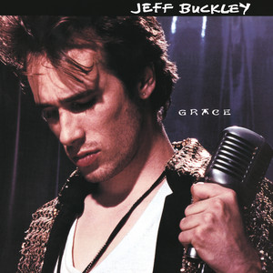

About the Album
"Grace" is the only studio album Jeff Buckley completed before his death in 1997. Released in 1994, it blends rock, folk, soul and jazz around his extraordinary multi-octave voice, moving from fragile whispers to soaring falsetto within a single song. His haunting cover of Leonard Cohen's "Hallelujah" became one of the most celebrated recordings of all time, and the album has grown into a classic admired by musicians such as David Bowie and Jimmy Page.
Tracklist
- Mojo Pin
- Grace
- Last Goodbye
- Lilac Wine
- So Real
- Hallelujah
- Lover, You Should've Come Over
- Corpus Christi Carol
- Eternal Life
- Dream Brother